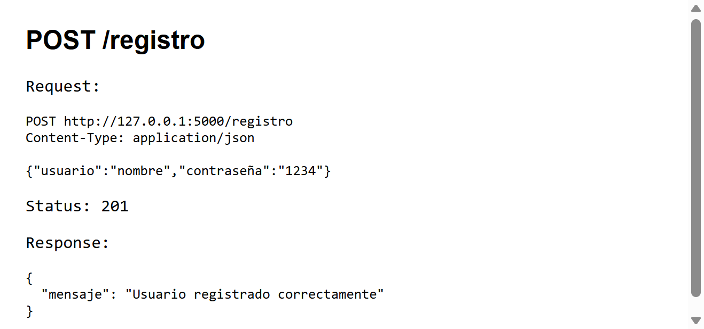
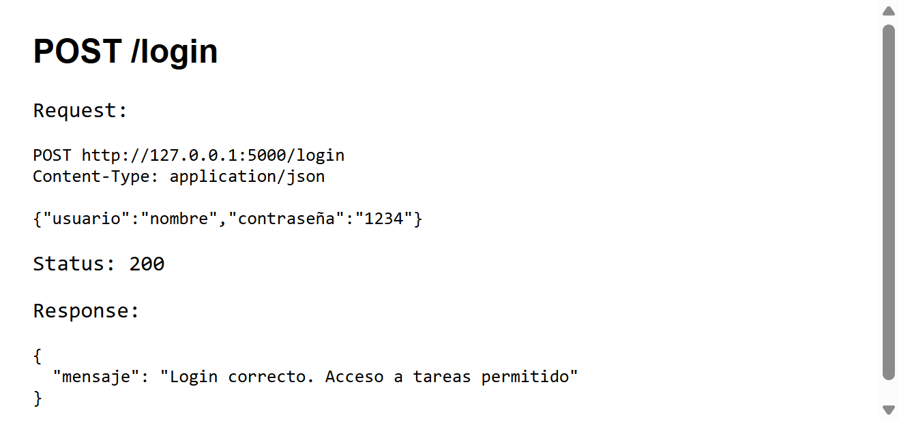

PFO 2 - API REST con Flask, contraseñas hasheadas y SQLite.
pip install -r requirements.txt python servidor.py
Servidor: http://127.0.0.1:5000
{
"usuario": "nombre",
"contraseña": "1234"
}
POST /registro

POST /login

GET /tareas
Para no guardarlas en texto plano. Si alguien accede a la base de datos, solo ve el hash y no la contraseña original.
No necesita un servidor aparte, guarda todo en un archivo y es fácil de usar en un trabajo práctico.
Código: servidor.py